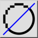

Vyhlazování
Panel nástrojů / Ikona:


Nabídka: Zobrazit > Vyhlazování
Zkratka: N, T
Příkazy: antialiasing | nt
Panel nástrojů / Ikona:


Přepíná vyhlazování hran pro aktuální výkres. S vyhlazováním hran se šikmé čáry, oblouky a texty zobrazují hladší.